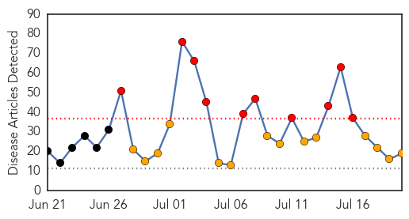
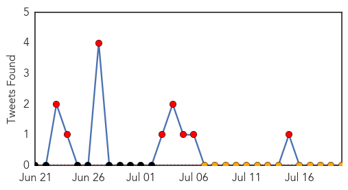

Chikungunya
30-Day Web Trend
1 alerts, 0 warnings

30-Day Twitter Trend
0 alerts, 0 warnings

Article Locations

Article Confidences

Top Articles:
- 0.999
- First U.S. cases of chikungunya mosquito virus reported
- 0.999
- Mosquito-borne virus poses threat to Caribbean travelers
- 0.997
- Massachusetts reports new case of potentially deadly mosquito-borne virus only days after two people were confirmed to have contracted it in Florida
- 0.995
- Chikungunya virus latest mosquito-borne disease to hit LI
- 0.990
- Chikungunya virus in the United States: CDC and other experts worried about mosquito-borne disease.
- 0.971
- Chikungunya Is Coming Part II
- 0.961
- Jamaica confirms first case of chikungunya virus bringing to 28 countries in Caribbean and Latin America with cases
- 0.928
- Tips to avoid mosquito-borne virus chikungunya
Top Tweets:
-
No tweets found for Jul 20, 2014
Ebola
30-Day Web Trend
10 alerts, 14 warnings

30-Day Twitter Trend
8 alerts, 0 warnings

Article Locations

Article Confidences

Top Articles:
- 1.000
- New plague threatens Africa
- 0.999
- America’s shameful ebola ignorance: The troubling truth about our attitude toward the virus
- 0.980
- Teen Dies One Day After Being Shot In Grand Boulevard Restaurant
- 0.980
- Support for county farmers is key ingredient of Film Feastival
- 0.980
- Wozniacki defeats Vinci 6-1, 6-1 to win Istanbul Cup final, clinches her 1st WTA title of 2014
- 0.980
- Report: Orioles, Phillies in 'preliminary' talks on trade involving Burnett
- 0.980
- Mayor Stephanie Rawlings-Blake Addresses New Curfew
- 0.980
- U.S. official: Russia supplied missile launchers to separatists
- 0.980
- Police search for missing Catonsville woman
- 0.980
- Teenage killer, now 51, gets another day in court
- 0.980
- Two shooting incidents Friday night in Baltimore
- 0.980
- WEATHER BLOG: Overcast With Some Sun
- 0.980
- Crews Search For Missing Boater In Talbot County
- 0.980
- Md. health agency cutting back on facilities it inspects
- 0.980
- The Wall Street Journal: Soy milk’s popularity a headache for dairy industry
- 0.977
- The virus detective who discovered Ebola in 1976 - Special Reports
- 0.969
- Facility Sets Up Extreme Precautions To Treat Ebola Patients
- 0.939
- WHO Praises Efforts and Contributions to Health Education and Prevention
- 0.930
- An 'Overhappy' Survivor, A Guarded Forecast: Reporting On Ebola
Top Tweets:
-
No tweets found for Jul 20, 2014